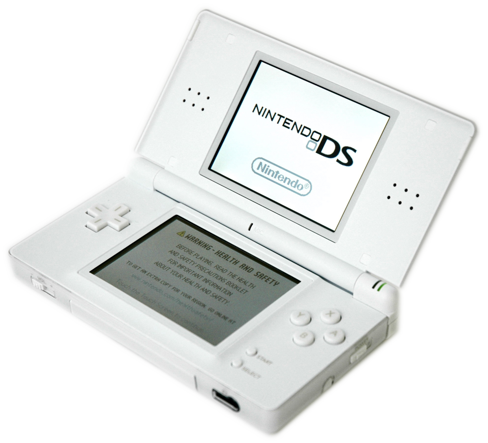
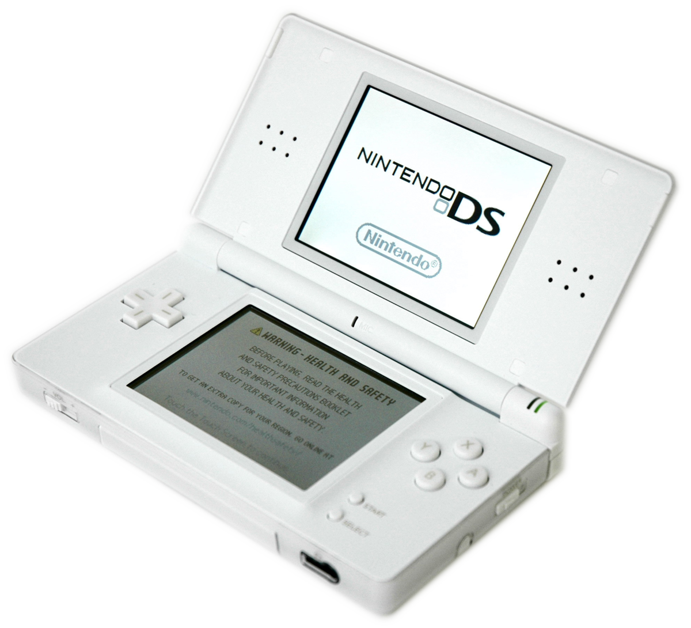

Daeho Chang
My digital life
I like electronics, especially computers. I like coding.
I've experienced several different languages such as C, C#, Java, Python, and now HTML

My gaming life
My second favorite hobby is gaming. I like pc gaming over consoles.
My personal favorites are Starcraft(RTS), League of Legends(AOS), and Civilization(TTS)
*I was so excited when Blizzard came with the new remastered version of Starcraft 1
I like League of legends (a.k.a LOL) a lot, as much as I like Starcraft.

one hobby that involves two of my hobbies is Final Fantasy(JRPG)
I usually enjoy games from Square Enix, which made Final Fantasy and Kingdom Hearts, but I like the dream like graphics that gives the game more fantasy-like feeling while playing.
Final Fantasy is one of my favorite games. I personally like Final Fantasy 13 and 15
those two games are my personal favorites, also that Final Fantasy games are the from the few games I like from console games.
*Final Fantasy 13, like some of the games from the series, was also on PC
I also like First Person Shooter(FPS) games such as Call of Duty, Rainbow-six, and Counter-Strike.
I used to own portable gaming devices such as Nintendo DS, Gameboy color, Gameboy Advance
*(some people already call them back in the days...)

 

My Anime life
My thirst favorite hobby is watching anime.
A few from my favorites will be Sword Art Online
The story line of Sword Art Online is on the concept of into virtual Reality Massively Multi-player Online Rpg games, which is a really good hook for people like me who likes games and tech a lot.
Another favorite classics will be the Gundam Series
the gundam series will be very famous to people who have watched anime before. It is based on futuristic technology Mobile Suits(a.k.a Gundams). They are basically giant robots that people ride in the cockpit to fight in a giant space war.
*I also realized that this summary makes it kinda childish and cheap kid movie, but it is really not. There is a reason The series has been out for over 20 years with a gigantic fandom.


also a related stuff would be Gunpla. Gunpla is a combined word between Gundams and plamodel( Plastic + model). plamodel is plastic miniature models. people build it with kits.